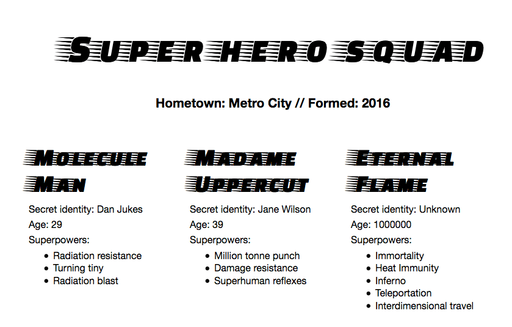

JavaScript Object Notation (JSON) is a standard text-based format for representing structured data based on JavaScript object syntax. It is commonly used for transmitting data in web applications (e.g., sending some data from the server to the client, so it can be displayed on a web page, or vice versa). You'll come across it quite often, so in this article we give you all you need to work with JSON using JavaScript, including parsing JSON so you can access data within it, and creating JSON.
| Prerequisites: | Basic computer literacy, a basic understanding of HTML and CSS, familiarity with JavaScript basics (see First steps and Building blocks) and OOJS basics (see Introduction to objects). |
|---|---|
| Objective: | To understand how to work with data stored in JSON, and create your own JSON strings. |
{{glossary("JSON")}} is a text-based data format following JavaScript object syntax, which was popularized by Douglas Crockford. Even though it closely resembles JavaScript object literal syntax, it can be used independently from JavaScript, and many programming environments feature the ability to read (parse) and generate JSON.
JSON exists as a string — useful when you want to transmit data across a network. It needs to be converted to a native JavaScript object when you want to access the data. This is not a big issue — JavaScript provides a global JSON object that has methods available for converting between the two.
Note: Converting a string to a native object is called deserialization, while converting a native object to a string so it can be transmitted across the network is called serialization.
A JSON string can be stored in its own file, which is basically just a text file with an extension of .json, and a {{glossary("MIME type")}} of application/json.
As described above, JSON is a string whose format very much resembles JavaScript object literal format. You can include the same basic data types inside JSON as you can in a standard JavaScript object — strings, numbers, arrays, booleans, and other object literals. This allows you to construct a data hierarchy, like so:
{
"squadName": "Super hero squad",
"homeTown": "Metro City",
"formed": 2016,
"secretBase": "Super tower",
"active": true,
"members": [
{
"name": "Molecule Man",
"age": 29,
"secretIdentity": "Dan Jukes",
"powers": [
"Radiation resistance",
"Turning tiny",
"Radiation blast"
]
},
{
"name": "Madame Uppercut",
"age": 39,
"secretIdentity": "Jane Wilson",
"powers": [
"Million tonne punch",
"Damage resistance",
"Superhuman reflexes"
]
},
{
"name": "Eternal Flame",
"age": 1000000,
"secretIdentity": "Unknown",
"powers": [
"Immortality",
"Heat Immunity",
"Inferno",
"Teleportation",
"Interdimensional travel"
]
}
]
}
If we loaded this string into a JavaScript program, parsed it into a variable called superHeroes for example, we could then access the data inside it using the same dot/bracket notation we looked at in the JavaScript object basics article. For example:
superHeroes.homeTown superHeroes['active']
To access data further down the hierarchy, you have to chain the required property names and array indexes together. For example, to access the third superpower of the second hero listed in the members list, you'd do this:
superHeroes['members'][1]['powers'][2]
superHeroes.members property, so we use ["members"].members contains an array populated by objects. We want to access the second object inside the array, so we use [1].powers property, so we use ["powers"].powers property is an array containing the selected hero's superpowers. We want the third one, so we use [2].Note: We've made the JSON seen above available inside a variable in our JSONTest.html example (see the source code). Try loading this up and then accessing data inside the variable via your browser's JavaScript console.
Above we mentioned that JSON text basically looks like a JavaScript object inside a string. We can also convert arrays to/from JSON. Below is also valid JSON, for example:
[
{
"name": "Molecule Man",
"age": 29,
"secretIdentity": "Dan Jukes",
"powers": [
"Radiation resistance",
"Turning tiny",
"Radiation blast"
]
},
{
"name": "Madame Uppercut",
"age": 39,
"secretIdentity": "Jane Wilson",
"powers": [
"Million tonne punch",
"Damage resistance",
"Superhuman reflexes"
]
}
]
The above is perfectly valid JSON. You'd just have to access array items (in its parsed version) by starting with an array index, for example [0]["powers"][0].
So, let's work through an example to show how we could make use of some JSON formatted data on a website.
To begin with, make local copies of our heroes.html and style.css files. The latter contains some simple CSS to style our page, while the former contains some very simple body HTML:
<header> </header> <section> </section>
Plus a {{HTMLElement("script")}} element to contain the JavaScript code we will be writing in this exercise. At the moment it only contains two lines, which grab references to the {{HTMLElement("header")}} and {{HTMLElement("section")}} elements and store them in variables:
const header = document.querySelector('header');
const section = document.querySelector('section');
We have made our JSON data available on our GitHub, at https://mdn.github.io/learning-area/javascript/oojs/json/superheroes.json.
We are going to load it into our page, and use some nifty DOM manipulation to display it, like this:

To obtain the JSON, we use an API called {{domxref("XMLHttpRequest")}} (often called XHR). This is a very useful JavaScript object that allows us to make network requests to retrieve resources from a server via JavaScript (e.g. images, text, JSON, even HTML snippets), meaning that we can update small sections of content without having to reload the entire page. This has led to more responsive web pages, and sounds exciting, but it is beyond the scope of this article to teach it in much more detail.
let requestURL = 'https://mdn.github.io/learning-area/javascript/oojs/json/superheroes.json';
XMLHttpRequest constructor, using the new keyword. Add the following below your last line:
let request = new XMLHttpRequest();
open() method. Add the following line:
request.open('GET', requestURL);
This takes at least two parameters — there are other optional parameters available. We only need the two mandatory ones for this simple example:
GET is fine, as we are just retrieving some simple data.responseType to JSON, so that XHR knows that the server will be returning JSON, and that this should be converted behind the scenes into a JavaScript object. Then we send the request with the send() method:
request.responseType = 'json'; request.send();
request.onload = function() {
const superHeroes = request.response;
populateHeader(superHeroes);
showHeroes(superHeroes);
}
Here we are storing the response to our request (available in the response property) in a variable called superHeroes; this variable now contains the JavaScript object based on the JSON! We are then passing that object to two function calls — the first one fills the <header> with the correct data, while the second one creates an information card for each hero on the team, and inserts it into the <section>.
We have wrapped the code in an event handler that runs when the load event fires on the request object (see onload) — this is because the load event fires when the response has successfully returned; doing it this way guarantees that request.response will definitely be available when we come to try to do something with it.
Now that we've retrieved the JSON data and converted it into a JavaScript object, let's make use of it by writing the two functions we referenced above. First of all, add the following function definition below the previous code:
function populateHeader(obj) {
const myH1 = document.createElement('h1');
myH1.textContent = obj['squadName'];
header.appendChild(myH1);
const myPara = document.createElement('p');
myPara.textContent = 'Hometown: ' + obj['homeTown'] + ' // Formed: ' + obj['formed'];
header.appendChild(myPara);
}
Here we first create an {{HTMLElement("h1")}} element with createElement(), set its textContent to equal the squadName property of the object, then append it to the header using appendChild(). We then do a very similar operation with a paragraph: create it, set its text content and append it to the header. The only difference is that its text is set to a concatenated string containing both the homeTown and formed properties of the object.
Next, add the following function at the bottom of the code, which creates and displays the superhero cards:
function showHeroes(obj) {
const heroes = obj['members'];
for (let i = 0; i < heroes.length; i++) {
const myArticle = document.createElement('article');
const myH2 = document.createElement('h2');
const myPara1 = document.createElement('p');
const myPara2 = document.createElement('p');
const myPara3 = document.createElement('p');
const myList = document.createElement('ul');
myH2.textContent = heroes[i].name;
myPara1.textContent = 'Secret identity: ' + heroes[i].secretIdentity;
myPara2.textContent = 'Age: ' + heroes[i].age;
myPara3.textContent = 'Superpowers:';
const superPowers = heroes[i].powers;
for (let j = 0; j < superPowers.length; j++) {
const listItem = document.createElement('li');
listItem.textContent = superPowers[j];
myList.appendChild(listItem);
}
myArticle.appendChild(myH2);
myArticle.appendChild(myPara1);
myArticle.appendChild(myPara2);
myArticle.appendChild(myPara3);
myArticle.appendChild(myList);
section.appendChild(myArticle);
}
}
To start with, we store the members property of the JavaScript object in a new variable. This array contains multiple objects that contain the information for each hero.
Next, we use a for loop to loop through each object in the array. For each one, we:
<article>, an <h2>, three <p>s, and a <ul>.<h2> to contain the current hero's name.secretIdentity, age, and a line saying "Superpowers:" to introduce the information in the list.powers property in another new constant called superPowers — this contains an array that lists the current hero's superpowers.for loop to loop through the current hero's superpowers — for each one we create an <li> element, put the superpower inside it, then put the listItem inside the <ul> element (myList) using appendChild().<h2>, <p>s, and <ul> inside the <article> (myArticle), then append the <article> inside the <section>. The order in which things are appended is important, as this is the order they will be displayed inside the HTML.Note: If you are having trouble getting the example to work, try referring to our heroes-finished.html source code (see it running live also.)
Note: If you are having trouble following the dot/bracket notation we are using to access the JavaScript object, it can help to have the superheroes.json file open in another tab or your text editor, and refer to it as you look at our JavaScript. You should also refer back to our JavaScript object basics article for more information on dot and bracket notation.
The above example was simple in terms of accessing the JavaScript object, because we set the XHR request to convert the JSON response directly into a JavaScript object using:
request.responseType = 'json';
But sometimes we aren't so lucky — sometimes we receive a raw JSON string, and we need to convert it to an object ourselves. And when we want to send a JavaScript object across the network, we need to convert it to JSON (a string) before sending. Luckily, these two problems are so common in web development that a built-in JSON object is available in browsers, which contains the following two methods:
parse(): Accepts a JSON string as a parameter, and returns the corresponding JavaScript object.stringify(): Accepts an object as a parameter, and returns the equivalent JSON string.You can see the first one in action in our heroes-finished-json-parse.html example (see the source code) — this does exactly the same thing as the example we built up earlier, except that we set the XHR to return the raw JSON text, then used parse() to convert it to an actual JavaScript object. The key snippet of code is here:
request.open('GET', requestURL);
request.responseType = 'text'; // now we're getting a string!
request.send();
request.onload = function() {
const superHeroesText = request.response; // get the string from the response
const superHeroes = JSON.parse(superHeroesText); // convert it to an object
populateHeader(superHeroes);
showHeroes(superHeroes);
}
As you might guess, stringify() works the opposite way. Try entering the following lines into your browser's JavaScript console one by one to see it in action:
let myObj = { name: "Chris", age: 38 };
myObj
let myString = JSON.stringify(myObj);
myString
Here we're creating a JavaScript object, then checking what it contains, then converting it to a JSON string using stringify() — saving the return value in a new variable — then checking it again.
You've reached the end of this article, but can you remember the most important information? You can find some further tests to verify that you've retained this information before you move on — see Test your skills: JSON.
In this article, we've given you a simple guide to using JSON in your programs, including how to create and parse JSON, and how to access data locked inside it. In the next article, we'll begin looking at object-oriented JavaScript.
{{PreviousMenuNext("Learn/JavaScript/Objects/Inheritance", "Learn/JavaScript/Objects/Object_building_practice", "Learn/JavaScript/Objects")}}